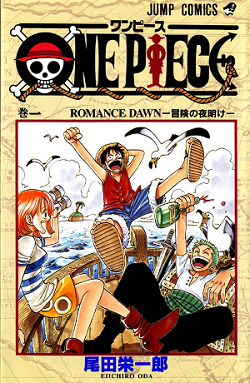

LENDA DE ONE PIECE
Riqueza, fama, poder. Houve um homem que conseguiu tudo nesse mundo... O lendário Rei dos Piratas,
Gol D. Roger!
Suas últimas palavras antes de morrer... levaram legiões aos mares.
" – Minhas riquezas e tesouros? Se quiserem, podem pegar. Procurem-no! Eu deixei tudo naquele lugar! "
O mundo então... Entrou na grande era dos piratas!
Inspirando muitos a se tornarem piratas e buscar seus sonhos, em busca do grande tesouro,
em busca do "One Piece"!!
|
ONE PIECE
|
ワンピース
Wan Pīsu
|
|  |
Capa do primeiro volume de One Piece, mostrando o protagonista Monkey D.
Luffy (centro) e os piratas do Chapéu de Palha. |
SOBRE ONE PIECE
One Piece é uma série de mangá escrita e ilustrada por Eiichiro Oda.
Os capítulos têm sido serializados desde 22 de julho de 1997 na revista
Weekly Shōnen Jum. Desde então, se tornou um sucesso comercial e crítico
em todo o mundo, com muitos dos volumes quebrando recordes de impressão
no Japão. O mangá conta as aventuras de Monkey D. Luffy, um jovem que,
acidentalmente, comeu uma fruta do diabo, a Gomu Gomu No Mi (fruta da
borracha). Com sua tripulação, os Piratas do Chapéu de Palha, Luffy explora
a Grand Line em busca do tesouro mais procurado do mundo, o "One Piece", a
fim de se tornar o próximo Rei dos Piratas.
O mangá foi adptado para anime, produzido pela Toei Animation, transmitido
no Japão desde 1999. Além disso, a Toei Animation produziu catorze filmes de anime,
um OVA e treze episódios especiais de televisão. Foram lançadas também vários
tipos de mídias desenvolvidas por diversas empresas relacionadas à série, como
um jogo de cartas colecionável, e vários jogos eletrônicos. A série de mangá é
licenciada e publicada no Brasil pela editora Panini Comics. A série de anime já
foi exibida no Brasil, e em Portugal. Atualmente a série é transmitida simultaneamente
pela Crunchyroll no Brasil e será transmitida pelo Netflix com uma nova dublagem.
One Piece recebeu elogios pelo seu enredo, arte, humor e caracterização.
Vários volumes do mangá quebraram recordes de publicação, incluindo a maior
tiragem inicial de qualquer livro no Japão. O sítio oficial da série anunciou
que o mangá estabeleceu um recorde mundial como "a série de quadrinhos de um
mesmo autor com mais cópias publicadas no mundo". Até maio de 2020, o mangá
já tinha vendido mais de 473 milhões de cópias em todo o mundo, sendo a
série de mangá mais vendida da história, além de ser a segunda série de
livros (se contarmos mangás na lista) mais vendida de todos os tempos. Foi a
série de mangá mais vendida pelo décimo primeiro ano consecutivo em 2018.
One Piece é uma das franquias de mídia com maior bilheteria de todos os
tempos, estima-se que tenha gerado mais de 21 bilhões de dólares em receita
total de franquia, a partir de mangás, animes e filmes, jogos e mercadorias.